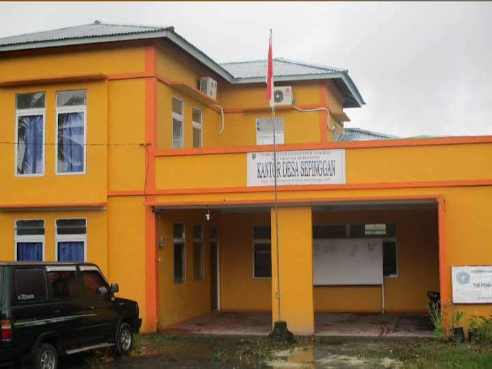
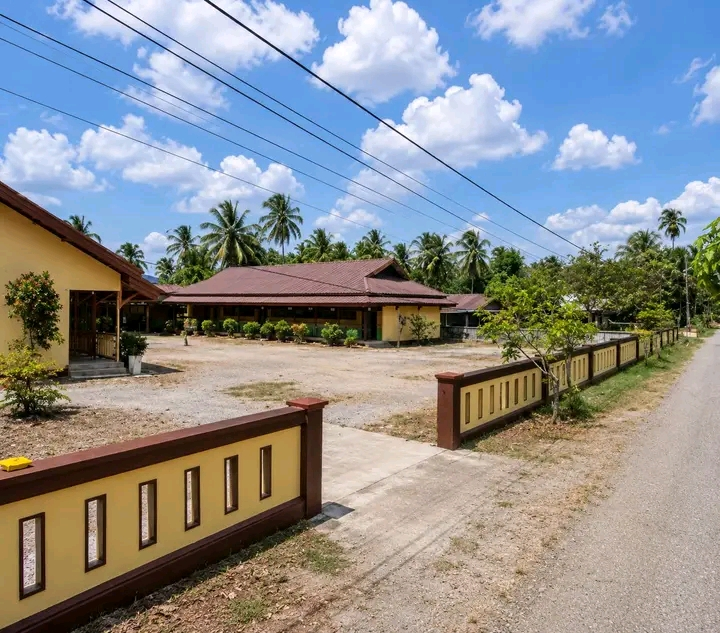

Sepinggan Kecil
Sepinggan Kecil adalah sebuah dusun di dalam wilayah Desa Sepinggan, Kecamatan Semparuk, Kabupaten Sambas, Kalimantan Barat.
Profil Singkat Sepinggan Kecil
Berikut adalah beberapa informasi mengenai Dusun Sepinggan Kecil.

Administratif
Dusun Sepinggan Kecil berada di bawah administrasi Desa Sepinggan, Kecamatan Semparuk, Kabupaten Sambas, Kalimantan Barat.

Pendidikan
Di dusun ini terdapat fasilitas pendidikan tingkat dasar yang dikenal sebagai SDN 08 Sepinggan Kecil, yang melayani kebutuhan belajar anak-anak setempat.
Kawasan Sekitar
Wilayah Sepinggan terbagi menjadi beberapa bagian yang saling berdampingan dengan desa lainnya di Kecamatan Semparuk.
Sepinggan Kecil
Salah satu bagian wilayah Sepinggan yang menjadi tempat tinggal masyarakat dan tempat berlangsungnya kehidupan sehari-hari.
Sepinggan Besar
Sepinggan Besar merupakan bagian lain dari wilayah Sepinggan yang berdampingan dengan Sepinggan Kecil.
Desa Sekitar
Sepinggan juga berdampingan dengan desa-desa lain di Kecamatan Semparuk, seperti Sepadu dan Seburing.